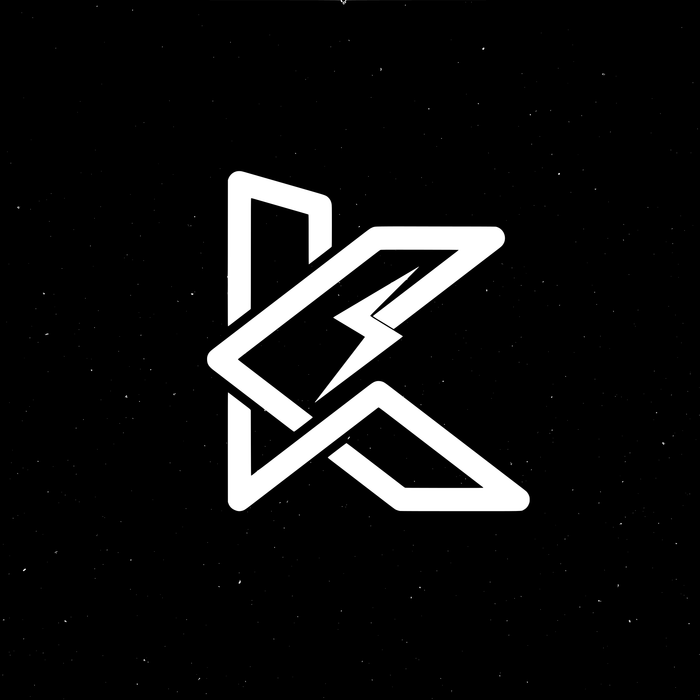

01 — IDENTITY
Cyber by design
A high-contrast visual system inspired by neon interfaces, digital art, and online culture.

KOBОCK. Explore ↗KOBОCK is a bold internet-native identity inspired by cyber culture, creative energy, and the people who build communities online.
KOBОCK is a meme coin concept on Solana with a futuristic visual identity. Its direction is simple: bring people together around creative memes, a recognizable look, and an open community.
This page describes a community concept, not a promise of utility, price performance, or future development. Verify the token address and official links independently before taking any action.
A high-contrast visual system inspired by neon interfaces, digital art, and online culture.
Memes, creative experiments, and community participation are at the heart of the concept.
Use only confirmed official links. Never trust messages promising guaranteed profits or asking for your seed phrase.
Once the token is created, add its verified Pump.fun page and official community links here.
Meme coins are highly volatile and you may lose some or all of the money you spend. KOBОCK does not promise profits or price increases. This website is informational only and is not financial advice. Always verify the token’s contract address and understand the risks before buying. Never share your wallet recovery phrase.